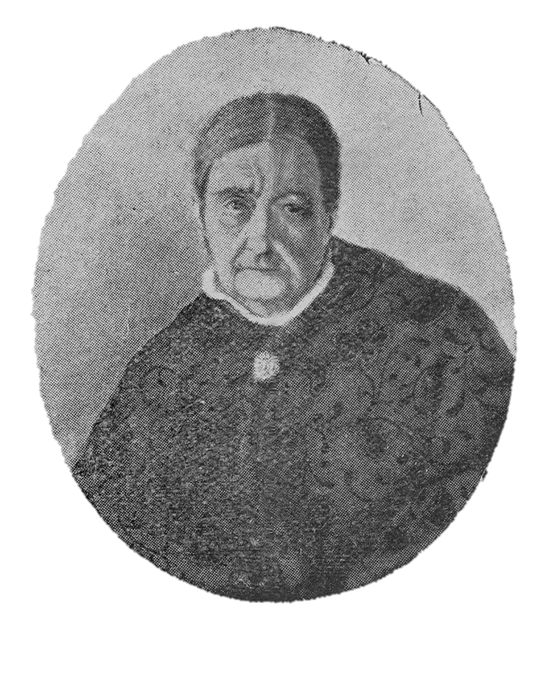

MERCEDES ÁLVAREZ DE SEGURA
Mercedes Álvarez de Segura nació en la ciudad de Mendoza el 08 de septiembre de 1800. Hija de Don Damián Álvarez y Manuela Morón, era sobrina carnal de los guerreros de la Independencia, Gral. Bruno y Coronel Juan Bautista Morón.
Residía en Buenos Aires, en casa del segundo de los nombrados, cuando la esposa de Gral. San Martín fue a unirse con él y la llevó como compañera de viaje.
Ayudó a bordar la Bandera de los Andes, y es la única que pudo verla, a través de 80 años, en la Casa de Gobierno, en donde hoy está depositada.
en 1828 se casó con el señor Tiburcio Segura, con el cual formó un hogar estimable, que la vio desaparecer de senectud, el 22 de noviembre de 1893.
Meses antes tuvimos el honor de oir de sus labios, recuerdos interesantes de los grandes días de la Heroica Cuyo.

NUESTROS INICIOS
Comenzamos con nuestra escuela cuando Beck y Herzog, fundadores de la localidad destinan solares de tierra para la Escuela Humboldt. Es cuando se conforma la Comisión Escolar que administra esas parcelas. Una de las actividades que inicia es sostener la enseñanza primaria, cubriendo los honorarios docentes.
En septiembre del 1929 la Comisión cursa nota al Consejo de Educación de la provincia, solicitando la creación de una Escuela del Hogar, agrícola u otra semejante. No resuelto nada al efecto oficial, se continúa dictando el curso de Corte.
En 1940 el Dr. Rafael Vega Milessi, se interesa y cambia ideas con dicha Comisión Escolar, referente a la instalación de la “Escuela Mixta de Oficios y del Hogar”; la comisión proveería de un edificio equipado para la instalación de la Escuela, Sección Mecánica Eléctrica y la del Hogar para niñas en el taller de Corte.
El 19 de abril de 1941 es oficializada la “Escuela del Hogar”, posteriormente pasa a ser el 10 de junio del mismo año “Escuela de Oficios y del Hogar” iniciando en esa fecha el taller de “Electro Mecánica y Carpintería”.
Desde 1941 le sucedieron a la escuela distintas denominaciones, pasando desde “Escuela del Hogar” para ser en la actualidad Escuela de Educación Técnica Nº681 “Mercedes Álvarez de Segura” con dos modalidades: “Técnico en Informática Profesional y Personal” y “Técnico en Equipos e Instalaciones Electromecánicas”.

PRIMER LOGO
DENOMINACIONES DE LA ESCUELA
A TRAVÉS DE SUS AÑOS
-
1941: Escuela del Hogar (19/04/1941)
Escuela de Oficios y del Hogar (10/06/1941)
-
1942: Escuela de Oficios y del Hogar
-
1944:Escuela del Hogar
-
1949: Escuela del Hogar Nº57
-
1950: Escuela Técnico Profesional Nº57
-
1951: Escuela Técnico Profesional para Mujeres Nº57 "Mercedes Álvarez de Segura"
-
1972: Escuela de Educación Técnica Nº57 "Mercedes Álvarez de Segura"
-
1975: Escuela de Educación Técnica Nº681 "Mercedes Álvarez de Segura"
-
2011: Escuela de Educación Técnico Profesional Nº681 "Mercedes Álvarez de Segura" (de 6 años)
DIRECTIVOS DE LA ESCUELA
A TRAVÉS DE SUS AÑOS
-
1941 - 1949: María König de Ghisi
-
1949 - 1966: María M. Pfening de Goddio
-
1967 - 1979: María I. Paravano de Bisang
-
1979 - 1981: Lucía López de Querini
-
1981 - 2007: María Isabel Beruto
-
2007 - 2014: Graciela Bologna
-
2014 - continúa: Daniel Bertschi